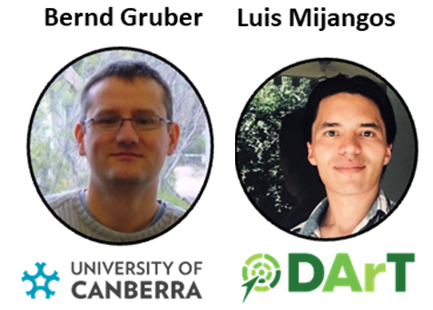
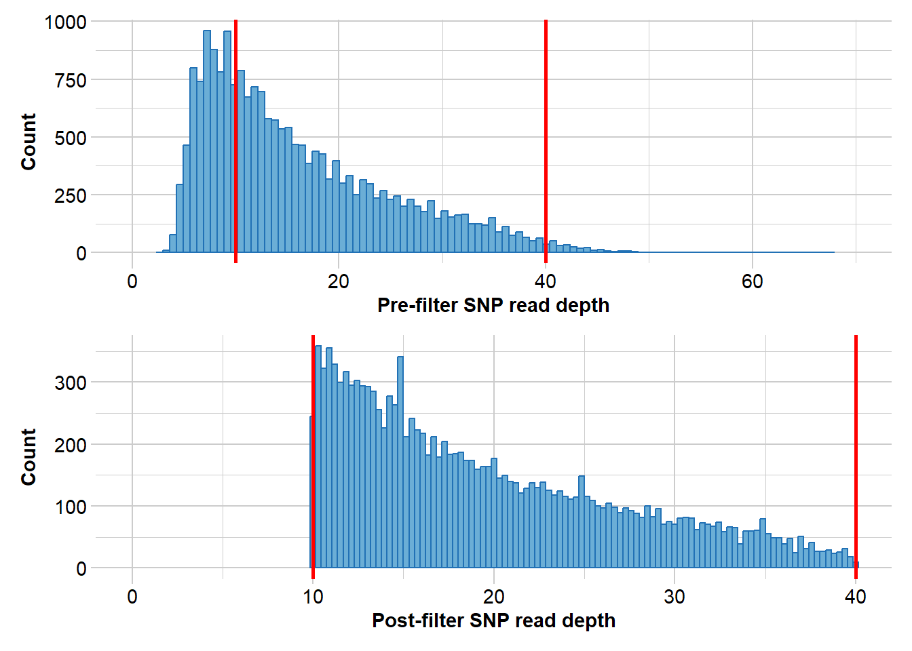
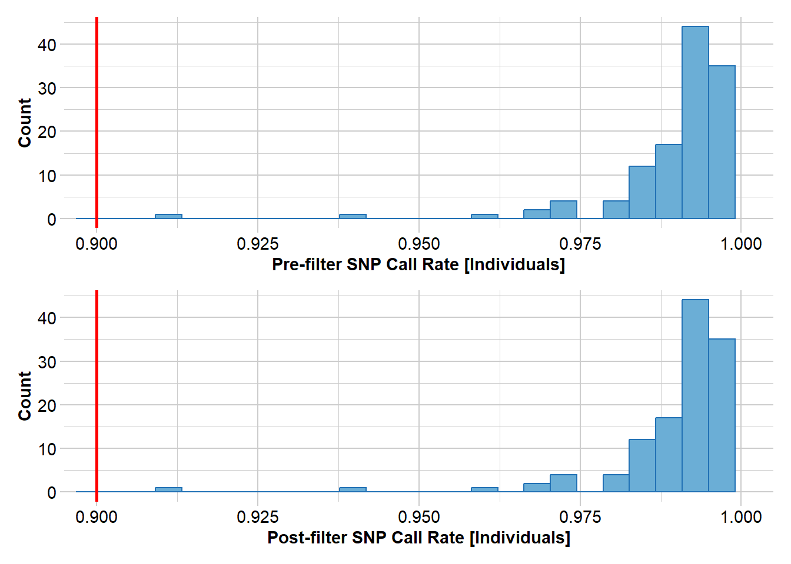

library(dartRverse)2 Estimating Effective Population Size and Key Stats
Session Presenters

Required packages
Introduction
This session will cover the basic statistics that are used to study populations, mainly towards a conservation perspective. We will explore how to estimate effective population size (Ne), heterozygosity (Ho, He), and other key statistics using genomic data. The session will include practical exercises using R and the dartRverse packages.
for this session you can use your own data, but feel free to use the example data provided in the dartRverse package.
gls <- possums.gl[c(1:5,31:35),1:7] #small data set Calculating the number of Alleles
In conservation genetics, the number of alleles (allelic richness) is important because it reflects the genetic diversity within a population. This diversity is crucial for:
Adaptive potential – more alleles mean a greater chance that some individuals carry beneficial variants to cope with environmental changes or disease.
Long-term survival – populations with low allelic diversity are more vulnerable to inbreeding, genetic drift, and extinction.
Conservation decision-making – monitoring allele numbers helps identify populations that are genetically depauperate and may need management (e.g., genetic rescue).
In short: more alleles = higher evolutionary potential.
There are two ways to meassure this quantity.
Number of Alleles (Na) for SNPs:
Since SNPs are biallelic by design, Na is either 1 or 2.
- If everyone has the same allele → Na = 1 (monomorphic)
- If both alleles are present → Na = 2 (polymorphic)
Allelic Richness (Ar) for SNPs:
Still measures how many alleles are present, but adjusted for sample size via rarefaction. In biallelic SNPs, Ar also ranges from 1 to 2, but:
- In small samples, rare alleles might be missed → Ar < Na
- Ar estimates the expected number of alleles if the sample had fewer individuals.
#by hand number of alleles
as.matrix(gls[1:5,])
#count the number of alleles per locus in each population
nas1 <- gl.report.allelerich(gls)nas1$`Allelic Richness per population` pop sum_corrected_richness mean_corrected_richness popsize SD
1 A 14 2.000000 5 0.00000
2 B 12 1.714286 5 0.48795nas2 <- gl.report.diversity(gls, table = "D")Starting gl.report.diversity
Processing genlight object with SNP data
Starting gl.filter.allna
Identifying and removing loci and individuals scored all
missing (NA)
Deleting loci that are scored as all missing (NA)
Deleting individuals that are scored as all missing (NA)
Completed: gl.filter.allna
Starting gl.colors
Selected color type dis
Completed: gl.colors
| | nloci| m_0Da| sd_0Da| m_1Da| sd_1Da| m_2Da| sd_2Da|
|:--|-----:|-----:|------:|-----:|------:|-----:|------:|
|A | 7| 2.000| 0.000| 1.921| 0.076| 1.860| 0.131|
|B | 7| 1.714| 0.488| 1.641| 0.453| 1.595| 0.439|
pairwise non-missing loci
| | A| B|
|:--|--:|--:|
|A | NA| NA|
|B | 7| NA|
0_D_beta
| | A| B|
|:--|-----:|-----:|
|A | NA| 0.244|
|B | 1.143| NA|
1_D_beta
| | A| B|
|:--|-----:|-----:|
|A | NA| 0.094|
|B | 1.077| NA|
2_D_beta
| | A| B|
|:--|----:|-----:|
|A | NA| 0.198|
|B | 1.16| NA|
Completed: gl.report.diversity A nice function to have is to run a bootstrapped simulation that selects a random sample of individuals and calculates the allelic richness for that sample and compares it from a sample of the same number of individuals from the combined population.
gg <- gl.report.nall(gls, simlevels = 1:10, reps = 20, ncores = 1) #change the number of cores if you have more availableStarting gl.report.nall
Processing genlight object with SNP data
Starting gl.filter.allna
Identifying and removing loci that are all missing (NA)
in any one population
Deleting loci that are all missing (NA) in any one population
Warning: no loci listed to delete! Genlight object returned unchanged
Completed: gl.filter.allna
Starting gl.colors
Selected color type dis
Completed: gl.colors Completed: gl.report.nall
Task
 Rerun the analysis with your own data (or use the glb dataset provided here)
Rerun the analysis with your own data (or use the glb dataset provided here)
Calculating Heterozygosity
Observed Heterozygosity (Ho):
Observed heterozygosity (Ho) is the proportion of individuals in a population that are heterozygous at a given locus. It is calculated as per individual and often averaged per population.
gl.report.heterozygosity(gls, method = "ind")Starting gl.report.heterozygosity
Processing genlight object with SNP data
Calculating observed heterozygosity for individuals
Note: No adjustment for invariant loci (n.invariant set to 0)
Starting gl.colors
Selected color type 2
Completed: gl.colors ind.name Ho f.hom.ref f.hom.alt n.Loc
1 0.4285714 0.0000000 0.5714286 7
2 0.8571429 0.1428571 0.0000000 7
3 0.4285714 0.2857143 0.2857143 7
4 0.2857143 0.5714286 0.1428571 7
5 0.4285714 0.0000000 0.5714286 7
31 0.4285714 0.2857143 0.2857143 7
32 0.7142857 0.1428571 0.1428571 7
33 0.4285714 0.2857143 0.2857143 7
34 0.2857143 0.5714286 0.1428571 7
35 0.4285714 0.2857143 0.2857143 7
Completed: gl.report.heterozygosity gl.report.heterozygosity(gls, method = "pop")Starting gl.report.heterozygosity
Processing genlight object with SNP data
Calculating Observed Heterozygosities, averaged across
loci, for each population
Calculating Expected Heterozygosities
Starting gl.colors
Selected color type dis
Completed: gl.colors pop n.Ind n.Loc n.Loc.adj polyLoc monoLoc all_NALoc Ho HoSD
A A 5 7 1 7 0 0 0.485714 0.157359
B B 5 7 1 5 2 0 0.457143 0.359894
HoSE He HeSD HeSE uHe uHeSD uHeSE FIS FISSD
A 0.059476 0.46 0.038297 0.014475 0.511111 0.042552 0.016083 0.02898 0.36056
B 0.136027 0.32 0.226274 0.085524 0.355556 0.251416 0.095026 -0.27500 0.33541
FISSE
A 0.136279
B NA
Completed: gl.report.heterozygosity There is a lot of discussion on the best way to calculate heterozygosity, but the most common method is to use the proportion of heterozygous individuals at each locus. This is “okay” if you compare individuals and populations of the same species (but see Sopniewski and Catullo 2022 and Schmidt et al. 2021 for a discussion on the limitations of this approach). The main problem is that when filtering for low quality (low read depth) often heterozygous loci are lost, which can bias the results. In addition to calculate a comparable heterozygosity across species, we would need to know the number of invariant sites, which are not easily obtained. dartR aims to estimate this number from closely neighbouring loci, if you are using dartR data (secondaries). This estimate is based on a Poisson distribution assumption which is most likely not a good idea as it underestimates the number of invariant sites. We are currently aiming to implement a better method to estimate the number of invariant sites, but for now we will use the gl.report.heterozygosity function to calculate Ho. Schmidt et al. (2021) suggests to calculate genome-wide/autosomal heterozygosity, but it basically means you need whole genome sequences, which is often not available. In summary be careful to calculate Heterozygosity, especially when comparing across species or uneven sampled populations. A rarefaction approach is often used to standardise the sample size. We can do that with the gl.report.heterozygosity function, which allows us to calculate Ho for each individual and then average it per population in combination of gl.subsample.ind() function.
#Create a sample data sets
# (two populations, once with 10 individuals and one with 5 individuals)
gls1 <- possums.gl[c(1:10, 31:35),]
#cr
subfun <- function(x) {
xx <- gl.subsample.ind(x, n = 5, replace = TRUE, verbose = 0)
out <- gl.report.heterozygosity(xx, method = "pop", verbose = 0)
return(out$Ho)
}
subfun(gls1) Warning: Input genlight objects both lack individual metrics[1] 0.343 0.436subfun(gls1) Warning: Input genlight objects both lack individual metrics[1] 0.366 0.433#ignore the warnings
res <- sapply(1:50, function(x) subfun(gls1)) rownames(res) <- popNames(gls1)
boxplot(t(res))summary(t(res)) A B
Min. :0.3060 Min. :0.4240
1st Qu.:0.3360 1st Qu.:0.4350
Median :0.3450 Median :0.4380
Mean :0.3457 Mean :0.4376
3rd Qu.:0.3590 3rd Qu.:0.4410
Max. :0.3780 Max. :0.4440
Task
 Try with your own data set
Try with your own data set
Expected Heterozygosity (He)
Expected heterozygosity (He) is a key measure of genetic diversity in conservation genetics, representing the probability that two alleles randomly drawn from a population are different. High He indicates a genetically diverse population, which is critical for adaptive potential and long-term viability. In contrast, low He can signal inbreeding, genetic drift, or population bottlenecks. Monitoring He helps conservationists assess population health, guide management actions such as translocations or genetic rescue, and evaluate the success of captive breeding programs in maintaining genetic variation..
Decline of Heterozygosity Over Time in an Ideal Population
In an ideal population, the expected heterozygosity (He) declines over time due to genetic drift, even in the absence of selection, mutation, or migration. The rate of this decline is governed by the effective population size (Ne) and follows this mathematical law:
\[ H_t = H_0 \left(1 - \frac{1}{2N_e} \right)^t \]
- ( H_0 ): initial heterozygosity
- ( H_t ): heterozygosity after ( t ) generations
- ( N_e ): effective population size
- ( (1 - ) ): per-generation retention of heterozygosity
Interpretation
- Larger ( N_e ) → slower loss of He
- Small ( N_e ) → rapid loss of He due to drift
This law underscores why maintaining a large Ne is a central goal in conservation: to preserve genetic variation over time and reduce the risk of inbreeding and loss of adaptive potential.
Expected heterozygosity (He) is a key measure of genetic diversity in conservation genetics, representing the probability that two alleles randomly drawn from a population are different. High He indicates a genetically diverse population, which is critical for adaptive potential and long-term viability. In contrast, low He can signal inbreeding, genetic drift, or population bottlenecks. Monitoring He helps conservationists assess population health, guide management actions such as translocations or genetic rescue, and evaluate the success of captive breeding programs in maintaining genetic variation.
gg <- gl.report.heterozygosity(gls)
gg pop n.Ind n.Loc n.Loc.adj polyLoc monoLoc all_NALoc Ho HoSD
A A 5 7 1 7 0 0 0.485714 0.157359
B B 5 7 1 5 2 0 0.457143 0.359894
HoSE He HeSD HeSE uHe uHeSD uHeSE FIS FISSD
A 0.059476 0.46 0.038297 0.014475 0.511111 0.042552 0.016083 0.02898 0.36056
B 0.136027 0.32 0.226274 0.085524 0.355556 0.251416 0.095026 -0.27500 0.33541
FISSE
A 0.136279
B NAExpected heterozygosity can be standardised by sample size (because allele frequencies are estimated and they are missing rare alleles at low sample size, hence is biased downwards. Therefore the correction is 2n/(2n-1) where n is the number of individuals. This is then called uHe, but is mainly important due to low sample sizes. Again you can use a rarefaction approach to standardise the sample size, which is implemented in the gl.report.heterozygosity function.
Hardy-Weinberg Equilibrium (HWE)
HWE is a principle that describes the genetic variation in a population under certain conditions. It states that allele and genotype frequencies will remain constant from generation to generation in the absence of evolutionary influences.
In conservation genetics, testing for HWE is important because:
- Deviations from HWE can indicate inbreeding, genetic drift, or selection pressures.
- Helps identify populations at risk of losing genetic diversity.
- Can inform management strategies to maintain genetic health.
To test for HWE, we can use the gl.report.hwe function, which performs a chi-squared test for each locus and returns the p-values.
This can be done on population level (subset=“each”) or on the whole dataset (subset=“all”).
#does not make much sense (sample size too low)
gl.report.hwe(gls,subset = "each",min_sample_size = 1 )Registered S3 methods overwritten by 'ggtern':
method from
grid.draw.ggplot ggplot2
plot.ggplot ggplot2
print.ggplot ggplot2`geom_line()`: Each group consists of only one observation.
ℹ Do you need to adjust the group aesthetic?
`geom_line()`: Each group consists of only one observation.
ℹ Do you need to adjust the group aesthetic?# only 10 loci... Lets try with more
gl.report.hwe(possums.gl[1:90,],subset = "each")Starting gl.report.hwe
Processing genlight object with SNP data
Analysing each population separately
Starting gl.colors
Selected color type 2c
Completed: gl.colors Reporting significant departures from Hardy-Weinberg
Equilibrium
NB: Departures significant at the alpha level of 0.05 are listed
Adjustment of p-values for multiple comparisons vary
with sample size
Population Locus Hom_1 Het Hom_2 N Prob Sig Prob.adj Sig.adj
<char> <char> <int> <int> <int> <num> <num> <char> <lgcl> <lgcl>
B X114 19 7 4 30 0.0481152745 sig NA NA
B X120 22 5 3 30 0.0322894276 sig NA NA
B X123 3 24 3 30 0.0026880391 sig NA NA
C X128 10 20 0 30 0.0108195955 sig NA NA
C X140 4 22 4 30 0.0261558384 sig NA NA
B X142 2 21 7 30 0.0275978824 sig NA NA
A X152 18 7 5 30 0.0248050366 sig NA NA
B X171 22 5 3 30 0.0322894276 sig NA NA
B X177 1 24 5 30 0.0009308178 sig NA NA
A X181 4 7 19 30 0.0481152745 sig NA NA
B X198 9 9 12 30 0.0324438457 sig NA NA
A X30 11 19 0 30 0.0279783750 sig NA NA
B X31 3 22 5 30 0.0250646233 sig NA NA
B X47 6 22 2 30 0.0118328520 sig NA NA
A X48 3 22 5 30 0.0250646233 sig NA NA
A X50 5 23 2 30 0.0079779773 sig NA NA
B X55 11 19 0 30 0.0279783750 sig NA NA
B X65 8 7 15 30 0.0066040187 sig NA NA
npop
<int>
1
1
1
1
1
1
1
1
1
1
1
1
1
1
1
1
1
1
Completed: gl.report.hwe Inbreeding FIS
Inbreeding coefficient (FIS) is a measure of the degree of inbreeding in a population. It quantifies the reduction in heterozygosity due to inbreeding compared to a randomly mating population. A positive FIS indicates inbreeding, while a negative value suggests outbreeding or excess heterozygosity.
gl.report.heterozygosity(gls)Starting gl.report.heterozygosity
Processing genlight object with SNP data
Calculating Observed Heterozygosities, averaged across
loci, for each population
Calculating Expected Heterozygosities
Starting gl.colors
Selected color type dis
Completed: gl.colors 
pop n.Ind n.Loc n.Loc.adj polyLoc monoLoc all_NALoc Ho HoSD
A A 5 7 1 7 0 0 0.485714 0.157359
B B 5 7 1 5 2 0 0.457143 0.359894
HoSE He HeSD HeSE uHe uHeSD uHeSE FIS FISSD
A 0.059476 0.46 0.038297 0.014475 0.511111 0.042552 0.016083 0.02898 0.36056
B 0.136027 0.32 0.226274 0.085524 0.355556 0.251416 0.095026 -0.27500 0.33541
FISSE
A 0.136279
B NA
Completed: gl.report.heterozygosity Fixed and private Alleles
Private alleles are alleles found only in a single population, while fixed alleles are alleles that occur at 100% frequency within a population. In conservation genetics, private alleles can indicate unique evolutionary history or local adaptation and are useful for identifying distinct populations or units for conservation. Fixed alleles, on the other hand, may signal a loss of genetic diversity due to drift or inbreeding. Monitoring both helps assess population structure, track gene flow, and guide decisions about mixing or isolating populations. Private alleles can also be used to identify assymetry in geneflow (Campbell et al. 2021).
Private Alleles
gl.map.interactive(possums.gl[1:120,])Starting gl.map.interactive
Processing genlight object with SNP data
Completed: gl.map.interactive gl.report.pa(possums.gl[1:120,] )Starting gl.report.pa
Processing genlight object with SNP data
Warning: no loci listed to keep! Genlight object returned unchanged
Warning: no loci listed to keep! Genlight object returned unchanged
p1 p2 pop1 pop2 N1 N2 fixed priv1 priv2 Chao1 Chao2 totalpriv AFD asym
1 1 2 A B 30 30 0 1 24 NA 0 25 0.309 NA
2 1 3 A C 30 30 0 1 24 NA 0 25 0.302 NA
3 1 4 A D 30 30 2 49 21 0 0 70 0.370 NA
4 2 3 B C 30 30 0 0 0 0 0 0 0.180 NA
5 2 4 B D 30 30 1 52 1 0 NA 53 0.332 NA
6 3 4 C D 30 30 1 52 1 0 NA 53 0.314 NA
asym.sig
1 NA
2 NA
3 NA
4 NA
5 NA
6 NA
Table of private alleles and fixed differences returned
Completed: gl.report.pa Fixed Alleles
gl.fixed.diff(possums.gl[1:120,]) Starting gl.fixed.diff
Processing genlight object with SNP data
Comparing populations for absolute fixed differences
Monomorphic loci removed
Comparing populations pairwise -- this may take time. Please be patient
Completed: gl.fixed.diff $gl
********************
*** DARTR OBJECT ***
********************
** 120 genotypes, 200 SNPs , size: 233.8 Kb
missing data: 0 (=0 %) scored as NA
** Genetic data
@gen: list of 120 SNPbin
@ploidy: ploidy of each individual (range: 2-2)
** Additional data
@ind.names: 120 individual labels
@loc.names: 200 locus labels
@loc.all: no allele labels
@pop: population of each individual (group size range: 30-30)
@other: a list containing: xy, loc.metrics, loc.metrics.flags, verbose, history, latlon
@other$latlon[g]: coordinates for all individuals are attached
$fd
A B C
B 0
C 0 0
D 2 1 1
$pcfd
A B C
B 0
C 0 0
D 1 0 0
$nobs
A B C D
A NA 60 60 60
B 60 NA 60 60
C 60 60 NA 60
D 60 60 60 NA
$nloc
A B C D
A NA 200 200 200
B 200 NA 200 200
C 200 200 NA 200
D 200 200 200 NA
$expfpos
[,1] [,2] [,3] [,4]
[1,] NA NA NA NA
[2,] NA NA NA NA
[3,] NA NA NA NA
[4,] NA NA NA NA
$sdfpos
[,1] [,2] [,3] [,4]
[1,] NA NA NA NA
[2,] NA NA NA NA
[3,] NA NA NA NA
[4,] NA NA NA NA
$pval
[,1] [,2] [,3] [,4]
[1,] NA NA NA NA
[2,] NA NA NA NA
[3,] NA NA NA NA
[4,] NA NA NA NA
attr(,"class")
[1] "fd"Effective Population Size
Current effective population size
Effective population size (Ne) is the size of an idealized population that would experience genetic drift or inbreeding at the same rate as the observed population.
It is almost always smaller than the actual census size (N) due to factors like unequal sex ratios, variation in reproductive success, or population size fluctuations.
#install the Neestimator package
dir <- dartRverse::gl.download.binary("neestimator", out.dir = tempdir())Downloaded binary to C:\Users\ejstr\AppData\Local\Temp\RtmpyGf7Vq\file124431876020
Unzipped binary to C:\Users\ejstr\AppData\Local\Temp\RtmpyGf7Vq/neestimator#simulate a population of 50 individuals with 1000 loci
sim50 <- gl.sim.Neconst(ninds = 50, nlocs = 3000)
#need to reproduce a bit (to get the population to be in Hardy-Weinberg equilibrium)
sim50 <- gl.sim.offspring(sim50, sim50, noffpermother = 1) #ideal population
sim50 <- gl.sim.offspring(sim50, sim50, noffpermother = 1) #ideal population
sim50 <- gl.sim.offspring(sim50, sim50, noffpermother = 1) #ideal population
sim50 <- gl.sim.offspring(sim50, sim50, noffpermother = 1) #ideal population
sim50 <- gl.sim.offspring(sim50, sim50, noffpermother = 1) #ideal population
gg <-gl.LDNe(sim50, neest.path = dir, mating = "random", critical = c(0.1,0.05))Starting gl.LDNe
Processing genlight object with SNP data
Starting gl2genepop
Processing genlight object with SNP data
The genepop file is saved as: C:\Users\ejstr\AppData\Local\Temp\RtmpyGf7Vq/dummy.gen/
Completed: gl2genepop
Processing genlight object with SNP data$offspring_Po
Statistic Frequency 1 Frequency 2 Frequency 3 Frequency 4
Lowest Allele Frequency Used 0.100 0.050 No S* 0+
Harmonic Mean Sample Size 50 50 50 50
Independent Comparisons 662976 1195831 1725153 1947351
OverAll r^2 0.027755 0.027571 0.026941 0.02643
Expected r^2 Sample 0.021276 0.021276 0.021276 0.021276
Estimated Ne^ 49.3 50.8 56.7 62.5
CI low Parametric 48.5 50.2 56.1 61.9
CI high Parametric 50 51.4 57.3 63.2
CI low JackKnife 37.7 39.6 45.1 50.3
CI high JackKnife 67.6 67.9 74 80.6
The results are saved in: C:\Users\ejstr\AppData\Local\Temp\RtmpyGf7Vq/genepopLD.txt
Completed: gl.LDNe Historic population sizes
#install the Neestimator package
dir <- dartRverse::gl.download.binary("epos", out.dir = tempdir())Downloaded binary to C:\Users\ejstr\AppData\Local\Temp\RtmpyGf7Vq\file124457e62304
Unzipped binary to C:\Users\ejstr\AppData\Local\Temp\RtmpyGf7Vq/eposgl.sfs(sim50)Starting gl.sfs
Processing genlight object with SNP dataCompleted: gl.sfs d0 d1 d2 d3 d4 d5 d6 d7 d8 d9 d10 d11 d12 d13 d14 d15
1026 116 129 111 71 98 72 85 70 70 64 54 57 49 34 37
d16 d17 d18 d19 d20 d21 d22 d23 d24 d25 d26 d27 d28 d29 d30 d31
38 37 34 25 30 37 24 22 16 18 30 19 22 30 26 29
d32 d33 d34 d35 d36 d37 d38 d39 d40 d41 d42 d43 d44 d45 d46 d47
34 27 22 9 21 18 17 17 26 25 26 25 17 30 17 34
d48 d49 d50
19 23 13 #parameters for epos
# mutation rate
u =1e-8 #from simulation
#To get L we need estimate the Length of the genome in base pairs.
# watterson estimate for a sample of 50 is 4.499
L <- sum(gl.sfs(sim50)[-1])/( 4 * 50 *1e-8 * 4.499)Starting gl.sfs
Processing genlight object with SNP data
Completed: gl.sfs gepos <- gl.run.epos(sim50, epos.path = dir, L=L, u=u, boot=10, minbinsize = 2) Processing genlight object with SNP data
Output written to C:\Users\ejstr\AppData\Local\Temp\RtmpyGf7Vq/epos.out Completed: gl.run.epos CGED example
library(dartRverse)
north <- readRDS("./data/TympoNorth.rds")
#filters
north2 <- gl.filter.callrate(north, method = "loc", threshold = 0.95)Starting gl.filter.callrate
Processing genlight object with SNP data
Warning: data include loci that are scored NA across all individuals.
Consider filtering using gl <- gl.filter.allna(gl)
Warning: Data may include monomorphic loci in call rate
calculations for filtering
Recalculating Call Rate
Removing loci based on Call Rate, threshold = 0.95 Completed: gl.filter.callrate north3 <- gl.filter.rdepth(north2, lower = 10, upper=40)Starting gl.filter.rdepth
Processing genlight object with SNP data
Removing loci with rdepth <= 10 and >= 40 
Completed: gl.filter.rdepth north4 <- gl.filter.monomorphs(north3)Starting gl.filter.monomorphs
Processing genlight object with SNP data
Identifying monomorphic loci
Removing monomorphic loci and loci with all missing
data
Completed: gl.filter.monomorphs north5 <- gl.filter.callrate(north4, threshold = 0.9, method="ind")Starting gl.filter.callrate
Processing genlight object with SNP data
Recalculating Call Rate
Removing individuals based on Call Rate, threshold = 0.9 
Note: Locus metrics not recalculated
Note: Resultant monomorphic loci not deleted
Completed: gl.filter.callrate #checks
north5 ********************
*** DARTR OBJECT ***
********************
** 121 genotypes, 10,832 SNPs , size: 44.6 Mb
missing data: 13360 (=1.02 %) scored as NA
** Genetic data
@gen: list of 121 SNPbin
@ploidy: ploidy of each individual (range: 2-2)
** Additional data
@ind.names: 121 individual labels
@loc.names: 10832 locus labels
@loc.all: 10832 allele labels
@position: integer storing positions of the SNPs [within 69 base sequence]
@pop: population of each individual (group size range: 121-121)
@other: a list containing: loc.metrics, latlon, loc.metrics.flags, verbose, history
@other$latlon[g]: coordinates for all individuals are attachedgl.sfs(north5)Starting gl.sfs
Processing genlight object with SNP data
Your data contains missing data, better filter stronger or use gl.impute to fill those gaps meaningful!Completed: gl.sfs d0 d1 d2 d3 d4 d5 d6 d7 d8 d9 d10 d11 d12 d13 d14 d15
0 747 557 375 244 203 165 154 118 125 122 114 114 122 107 115
d16 d17 d18 d19 d20 d21 d22 d23 d24 d25 d26 d27 d28 d29 d30 d31
96 106 102 96 104 106 79 105 103 98 78 89 86 79 91 89
d32 d33 d34 d35 d36 d37 d38 d39 d40 d41 d42 d43 d44 d45 d46 d47
86 89 83 101 95 78 83 87 53 90 77 89 78 76 73 90
d48 d49 d50 d51 d52 d53 d54 d55 d56 d57 d58 d59 d60 d61 d62 d63
66 75 88 100 75 70 71 80 75 72 77 54 81 74 63 67
d64 d65 d66 d67 d68 d69 d70 d71 d72 d73 d74 d75 d76 d77 d78 d79
65 90 64 63 70 49 72 74 60 61 72 60 50 70 62 71
d80 d81 d82 d83 d84 d85 d86 d87 d88 d89 d90 d91 d92 d93 d94 d95
49 70 70 64 69 58 62 51 76 51 63 54 59 56 44 61
d96 d97 d98 d99 d100 d101 d102 d103 d104 d105 d106 d107 d108 d109 d110 d111
51 61 54 54 76 42 49 62 43 49 56 37 53 53 53 62
d112 d113 d114 d115 d116 d117 d118 d119 d120 d121
67 60 60 61 55 66 53 43 58 39 nInd(north5)[1] 121nLoc(north5)[1] 10832### takes 10 minutes or so....
#curNe <- gl.LDNe(north5, neest.path = dir, critical = 0.05) #-> ~40
#for dart data (times 75), 69+
L <- nLoc(north5)*75*200
mu = 16.17e-9
# takes a minute or so
gg <- gl.run.epos(north5, epos.path = dir,L = L, u = mu,
method = "greedy", depth = 2, boot=5) Processing genlight object with SNP data
Output written to C:\Users\ejstr\AppData\Local\Temp\RtmpyGf7Vq/epos.out 
Completed: gl.run.epos gg$plotFurther Study
Exercise
 Now run your own data set (or use the tympo data set) to study any of the topics from the tutorial. Have fun !!!
Now run your own data set (or use the tympo data set) to study any of the topics from the tutorial. Have fun !!!
Readings
Campbell, C.D., Cowan, P., Gruber, B. et al. Has the introduction of two subspecies generated dispersal barriers among invasive possums in New Zealand?. Biol Invasions 23, 3831–3845 (2021). https://doi.org/10.1007/s10530-021-02609-1
Schmidt, T. L., Jasper, M.-E., Weeks, A. R., & Hoffmann, A. A. (2021). Unbiased population heterozygosity estimates from genome-wide sequence data. Methods in Ecology and Evolution, 12, 1888–1898. https://doi.org/10.1111/2041-210X.13659
Sopniewski J, Catullo RA. Estimates of heterozygosity from single nucleotide polymorphism markers are context-dependent and often wrong. Mol Ecol Resour. 2024 May;24(4):e13947. doi: 10.1111/1755-0998.13947. Epub 2024 Mar 3. PMID: 38433491.
Wang, J. (2022). A joint likelihood estimator of relatedness and allele frequencies from a small sample of individuals. Methods in Ecology and Evolution, 13(11), 2443-2462.
Waples, R. S. (2006). “A bias correction for estimates of effective population size based on linkage disequilibrium at unlinked gene loci*.” Conservation Genetics 7(2): 167-184.
Waples, R. K., et al. (2016). “Estimating contemporary effective population size in non-model species using linkage disequilibrium across thousands of loci.” Heredity 117(4): 233-240.